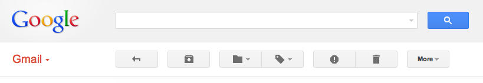

Gmail Button Order
I recently noticed that a few emails from colleagues had been going into my spam folder for a month or two now. I never check my spam folder (it's fill within a day), so this was easy to over look and it definitely caused a problem.
How did it happen? I reported the email as spam. I didn't mean to, it was a slip of mouse. Was it my fault for being careless, or Google's for putting two vastly opposite functions next to eachother?
I archive a lot of emails. Keeping inbox zero consisently isn't easy. I sometimes delete an automated message that has no historical value. I rarely report spam, since Google does a great job.
Archiving has a pretty low risk, I can always unarchive it. Same with deleting, although it may be permently deleted in 30 days. Reporting spam is a high risk, not only will it be delete in 30 days, but the next few messages won't show up in your inbox.
Why are the two polar oposite buttons next to each other? Sure, all three buttons "move the email", but I don't always think of it in those terms. And how do I un-report spam? I still can't be sure that Google knows I made a mistake.
Just a quick shift. It seems odd at first. "Back", "move email", "modifiy", "move", "more". Separating the three move buttons? Separating the action buttons by drop down buttons?
There are two types of email: good and bad. Save and tag the good ones, delete and report the bad. The buttons are aligned to your thoughts, not the email.
What else? Maybe the "report spam" button could appear after you delete an email. Google already shows an "undo" link, a spam link wouldn't be much of a stretch. Of course, this would drastically decrease the number of people who report spam.